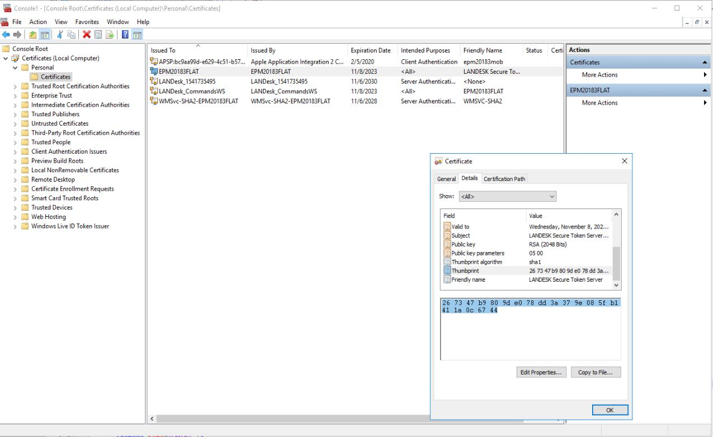

Decode your thumbprint
Where to find?
On core server go to mmc
Add/remove snapin
Certificates
Add
Computer - local accounts
In the certificates click on certificate that is named as current server
Double click on it and go to details
Click on thumbprint, you can copy it from here
